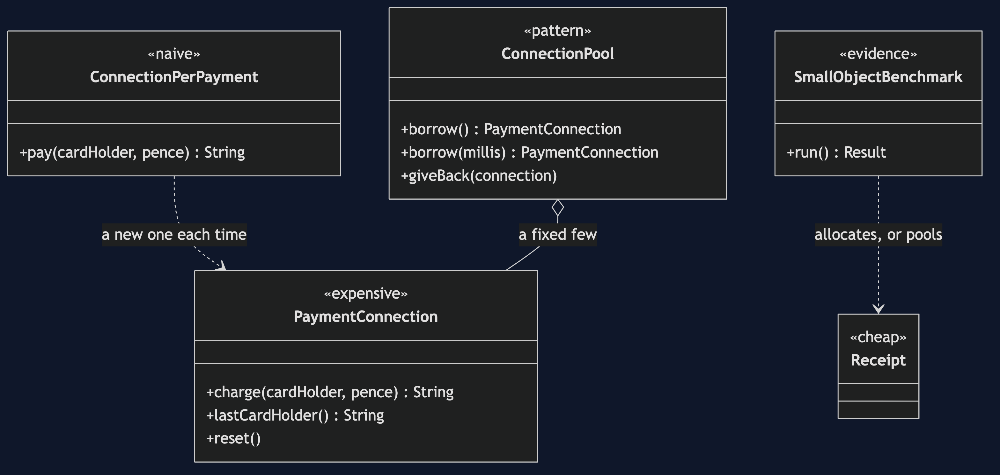
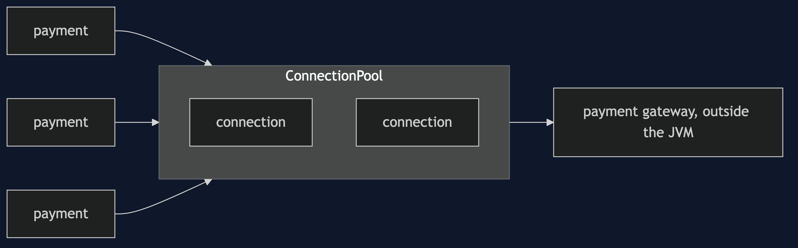
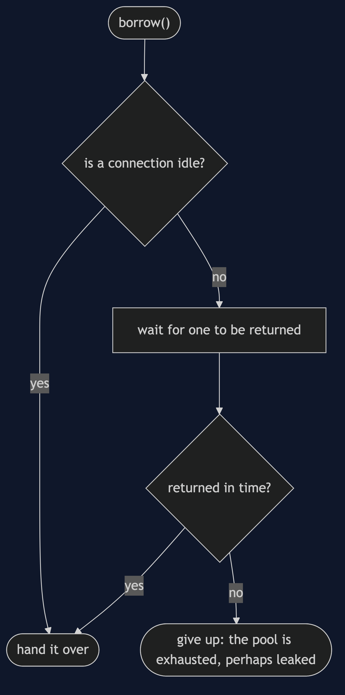
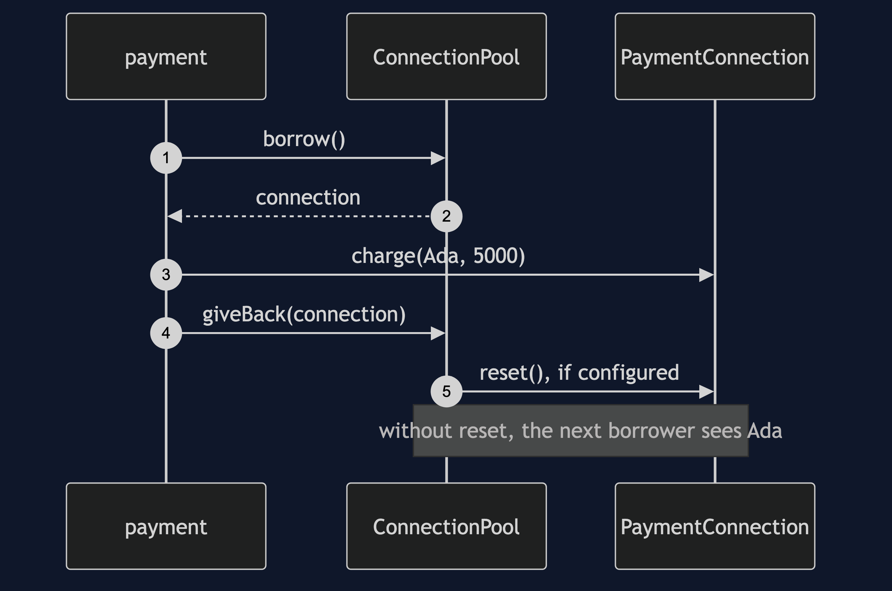
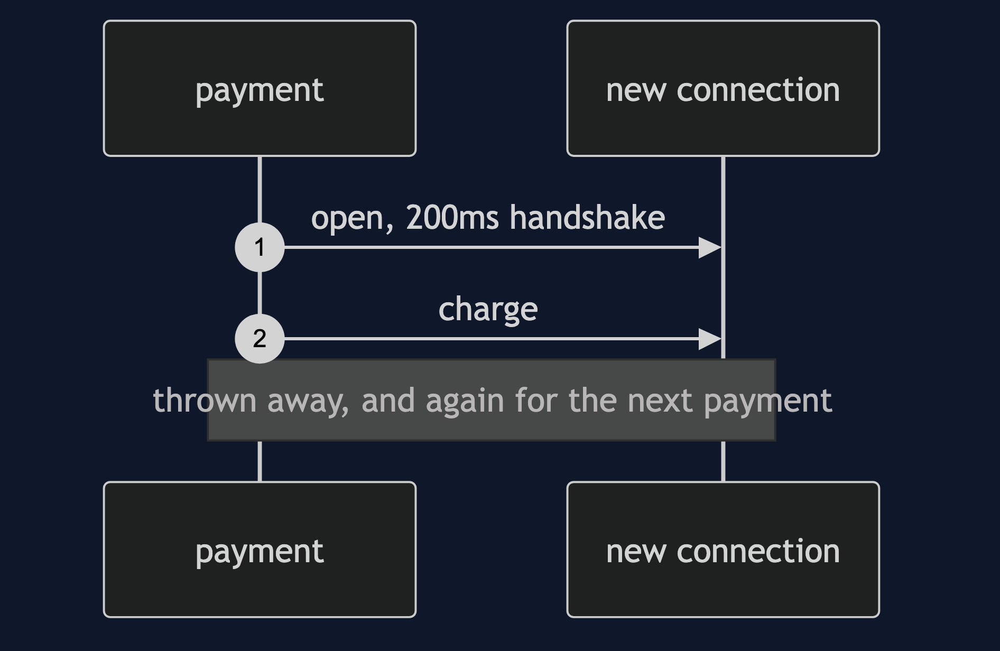
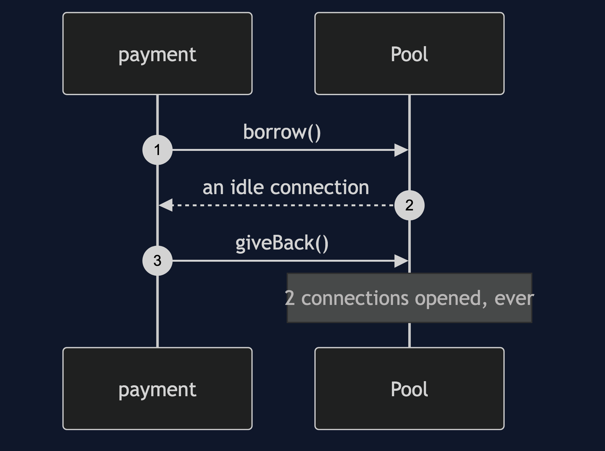
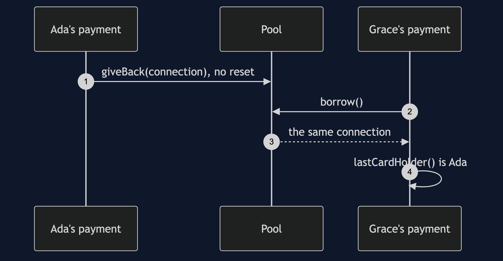
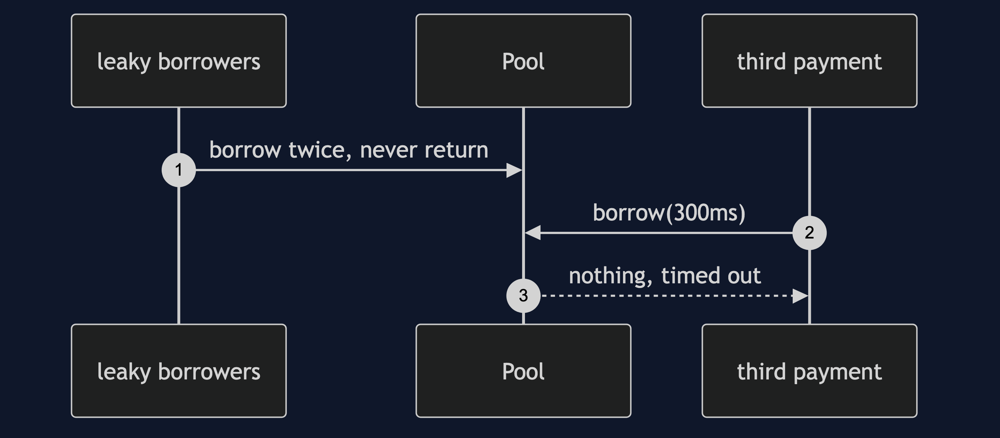

Object Pool Pattern
src/main/java/com/jk/explore/objectpool/
├── PaymentDemo.java composition root — the six acts
│
├── domain/
│ └── PaymentConnection.java expensive to make; remembers its last card holder
├── naive/
│ └── ConnectionPerPayment.java a new connection for every payment
├── pattern/ ← the real thing
│ └── ConnectionPool.java borrowed and returned; optional reset on return
└── bench/ ← the evidence
├── Receipt.java a three-field object: the kind people pool
└── SmallObjectBenchmark.java allocating against pooling it, method documentedAn object pool keeps a few expensive objects and lends them out, so the cost of creating one is paid once. Use it for what is expensive outside the JVM, and for nothing else.
This is the second project in foundational-design-patterns. It is one of the most over-applied ideas in Java, so the project's value is its honesty: the pattern is shown working, and then shown making things slower, leaking data between customers, hanging the application and being sized wrongly. It ends with a plain verdict.
Run
./gradlew runSix acts. The handshake is a stand-in for a real network handshake and takes 200 milliseconds. Timings are real and vary by machine; counts do not. The benchmark's method is under "How the benchmark was measured" below.
OBJECT POOL — expensive to make, cheap to borrow
ONE. A new connection for every payment.
10 payments: 10 connections opened, 2075ms.
every payment paid a 200ms handshake. simple, correct, and slow.
TWO. A pool of two connections, borrowed and returned.
10 payments: 2 connections opened, 421ms, including opening the pool.
this is the right use of the pattern: the thing pooled is expensive outside the JVM.
THREE. The bill: pooling a small object is slower than allocating it.
a three-field object, 20000000 operations, median of 9 rounds after 5 warm-up rounds:
allocating (the JIT may remove it entirely): 0.35 ns per operation
allocating (forced onto the heap): 2.14 ns per operation
borrowing from a pool: 6.31 ns per operation
the pool is 2.9 times slower than real allocation.
objects created: 20000000 by allocating, 4 by pooling. the pool wins on that count and loses on time.
why: the pool adds a lock and moves objects through shared memory, and the JVM's allocator is a pointer bump.
timings vary by machine. the direction is the claim, and the method is in the README.
FOUR. The bill: a returned object carries its old state.
Grace borrows the connection Ada just returned.
the connection says its last card holder was: Ada Lovelace
a security bug, not a performance one, and the one that happens in the field.
with a reset on return: null. every pool needs one.
FIVE. The bill: a leaked object is never returned.
two borrowers take both connections and never give them back.
a third payment waited 310ms and got: nothing (rescued by a timeout)
without the timeout it would wait forever. the application hangs. worse than a slow start.
SIX. The bill: sizing is a guess, and both directions cost.
four payments at the same time, each needing 50ms of work on a connection:
pool of 1: 220ms (they queue)
pool of 4: 59ms
pool of 50: 50 connections opened, and 46 sit idle, held open, for four payments.
the verdict: pool what is expensive outside the JVM: connections, threads, native handles. nothing else.
a thread pool is the same idea, and the pattern's other unambiguously correct use.Test
./gradlew test2 test classes, 10 test methods, offline, none of which asserts a timing.
Technologies and versions
| What | Version | Why it is here |
|---|---|---|
| Java | 21 | The repository standard, via the Gradle toolchain block |
| Gradle | 9.2.1 | The wrapper in this directory; no separate install needed |
| JUnit 5 | 5.10.2 | Test runner |
No framework. A hand-built project stays plain Java so the mechanism is the whole lesson.
Learning Material
| Document | What it covers |
|---|---|
docs/problem-statement.md | The handshake, and a connection per payment |
docs/object-pool-pattern-explained.md | The pattern, the evidence, the four costs, and the verdict |
docs/class-diagram.md | The types |
docs/architecture-diagram.md | Payments, the pool and the gateway |
docs/data-flow-diagram.md | One borrow: a connection, a wait, or a timeout |
docs/sequence-diagram.md | Written for a listener with the screen off |
docs/uml-diagram.md | Four sequences |
docs/animation.html | The six acts in a browser |
docs/prerequisites.md | What you need to know |
docs/session.md | A one-hour taught session |
docs/spec.md | The generated specification |
docs/youtube.md | Title, description and chapters |
The pattern in one picture

Where each piece sits

How one request moves

Who calls whom, in order

All four sequences




Video
Built from video/scenes.py by video/build_video.sh. The rendered file is not committed; see the repository README for why.
How the benchmark was measured
Act three is a hand-rolled measurement, not JMH, so its method is written down. Full detail is in docs/object-pool-pattern-explained.md.
- Each variant does the same work per operation, and adds to a sum that is read at the end, so the work cannot be optimised away.
- The pool is a synchronised
ArrayDeque, used from one thread. - Five warm-up rounds are discarded. Nine measured rounds follow, and the median is reported. The variants alternate in each round.
- Allocation is measured twice: as plain code, where the JIT may remove it entirely, and with every object stored in a static field so a real heap allocation must happen. The pool is compared against the second.
- Absolute numbers vary by machine. The direction, and a ratio of roughly three, were stable across repeated runs. No test asserts a timing.
Where you have already met this
Every database DataSource you have configured is a connection pool, and every ExecutorService is a thread pool.
When this is too much
For anything cheap to create, which is nearly everything.
Where this sits
This is the second of five projects in foundational-design-patterns. Its one unambiguously correct application beyond connections is the Thread Pool.
Also available with a framework
Object Pool with HikariCP Pattern reruns this idea on a real framework, and shows what the framework adds and where it can undo the pattern. Watch this project first.